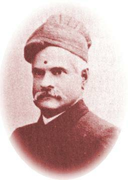
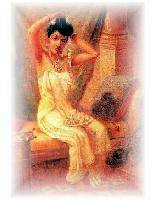

Like most others of my generation, I came across Ravi Varma in early childhood, on the calendars that adorned the walls of many a household in Kerala. The beautiful woman with smudged lipstick, wearing retina-scorching pink sari, balancing on a pink lotus was Lakshmi. Saraswathy was in a white sari sitting more comfortably. I was told that the painter was Ravi Varma but I had no reason to think much of him. It was not until at the age of eight or nine I had the opportunity to visit the 'far off land' of Trivandrum and its art gallery.
The real paintings were beautiful; they also told stories that I was familiar with, of Sakunthala of Damayanthi and so on. I saw more of them years later in Mysore, they were still beautiful and the story telling was even more powerful.
Raja Ravi Varma was the earliest painter recognised outside Kerala, and probably the best painter ever and definitely the best known, from Kerala. He was born in 1848 and grew up in Kilimanoor palace, outside Trivandrum. Kilimanoor had a great tradition of art and music and the young Ravi Varma was exposed to different forms of art. But he was influenced by the paintings of his uncle Raja Raja Varma, another famous painter. Painting was not well developed in Kerala unlike music and dance, and has not much changed since. In early days, young Ravi Varma had to content himself by painting murals on the walls of his residence. Mural painting was first introduced to Kerala in the 8th century, but canvas was not yet introduced to Indian painting scene unlike in Europe, and oil painting was unfamiliar to Indian artists.
 Ravi Varma was influenced by Tanjore style of painting but his main influence was most definitely European. He has a distinctive narrative style of storytelling evident in all his work. Much of his work is based on literature, mostly stories from Hindu mythology. The main theme throughout his work was 'women' and sari was the dress he painted. Women were from different parts of India, from different religions and backgrounds. Paintings such as 'Nair beauty, 'Malabar beauty' and 'Begum at bath' are examples of this theme. A Parsee woman was the heroine in 'Decking the bride'. 'Gypsies of South India' shows the hard life of a less affluent woman. Sadness is the theme in 'At the Well', showing the misery of a young bride in her marital home. Concentration on expressions of human figures meant that some criticism crept in. Rabindranath Tagore commented that the paintings lacked physical proportion. The popularity of Ravi Varma in the late 19th century was helped by the accessibility of his paintings.
Poor imitations followed rapidly with 'Poona Pictures’, which probably accounted for many distorted pictures of Lakshmi and Saraswathy appearing on wall calendars and on packs of soap! Nevertheless Ravi Varma was a influence on Indian fashion.
He canvassed the ruler of Travancore to build an art gallery, although this did not happen until much later, He was much more successful in bringing about legislation to protect copyrights of artists following the bad experience with the 'Poona Pictures' prints. Though started as a court painter at Trivandrum, he travelled widely and received patronage from the many princes in India. He also received commission from the colonial rulers of that time. Outside India, his exhibitions received attention and praise, but he himself did not travel abroad, as an upper caste Hindu did not attempt sea voyage in those days! Perhaps the best accolade for Ravi Varma came from another eminent son of India, Swami Vivekananda. After visiting the Chicago Art Exhibition of 1892, he commented that title paintings of Ravi Varma 'is about all that is worth seeing here'! It is then a great disappointment that a century later not many have followed in his footsteps.
Ravi Varma paintings are exhibited at Sri Chitra Art Gallery, Trivandrum, Sri Jayachamarajendra Art Gallery, Mysore, Maharajah Fatehsingh Museum, Baroda and the National Art Gallery, Madras.